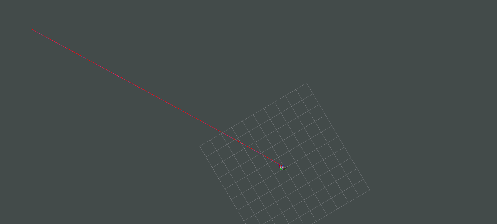
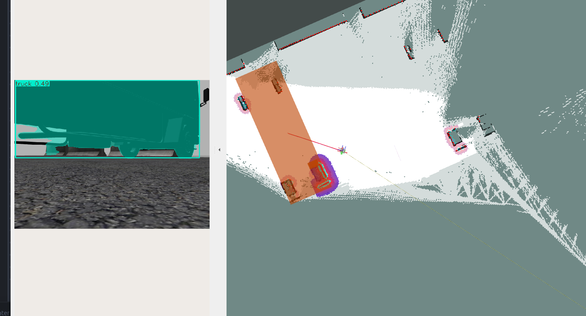
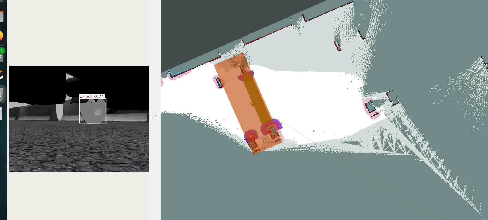
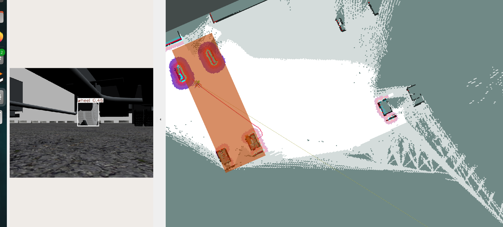

Autonomous Truck Inspection System
Technical Architecture & System Design
Document Version: 1.0
Date: December 2025
Purpose: Executive Technical Presentation
Executive Summary
This document presents the technical architecture of an autonomous truck inspection system built on ROS 2 Humble. The system enables a mobile robot to autonomously navigate to parked trucks, detect them using AI vision models, and systematically inspect all four wheels of each truck. The solution integrates computer vision, 3D perception, and autonomous navigation to deliver a complete inspection workflow.
1. System Architecture Overview
1.1 High-Level System Block Diagram
graph TB
subgraph "Sensors"
CAM[OAK-D Depth Camera]
LIDAR[2D LiDAR]
PT[PT Camera]
end
subgraph "Vision Pipeline"
ULTR[Ultralytics Segmentation Node]
PROC[Segmentation Processor Node]
end
subgraph "Mission Control"
INSP[Inspection Manager Node]
end
subgraph "Navigation Stack"
NAV2[Nav2 Navigation Stack]
SLAM[SLAM System]
end
subgraph "Robot Platform"
BASE[Robot Base Controller]
TF[TF Transform Tree]
end
CAM -->|RGB Images| ULTR
ULTR -->|Segmentation Masks| PROC
CAM -->|Point Cloud| PROC
PROC -->|3D Bounding Boxes| INSP
LIDAR -->|Laser Scan| SLAM
SLAM -->|Map + Pose| NAV2
INSP -->|Navigation Goals| NAV2
NAV2 -->|Velocity Commands| BASE
BASE -->|Odometry| TF
TF -->|Transforms| INSP
TF -->|Transforms| PROC
INSP -->|Mode Commands| ULTR
style INSP fill:#4a90e2,color:#fff
style ULTR fill:#50c878,color:#fff
style PROC fill:#50c878,color:#fff
style NAV2 fill:#ff6b6b,color:#fff
Key Components:
- Vision Pipeline: AI-powered object detection and 3D localization
- Mission Control: State machine orchestrating the inspection mission
- Navigation Stack: Autonomous path planning and execution
- Robot Platform: Physical robot with sensors and actuators
2. Package Architecture
2.1 System Component Diagram
graph LR
subgraph "segment_3d Package"
A[ultralytics_node.py<br/>YOLO Segmentation]
B[segmentation_processor_node<br/>3D Bounding Box Generation]
end
subgraph "inspection_manager Package"
C[inspection_manager_node.py<br/>Mission State Machine]
end
subgraph "External Systems"
D[Nav2<br/>Navigation]
E[Camera<br/>RGB + Depth]
F[TF Tree<br/>Transforms]
end
E -->|RGB Image| A
A -->|ObjectsSegment| B
E -->|PointCloud2| B
B -->|BoundingBoxes3d| C
C -->|PoseStamped| D
C -->|String Mode| A
F <-->|Transform Lookups| C
F <-->|Transform Lookups| B
style A fill:#90EE90
style B fill:#90EE90
style C fill:#87CEEB
style D fill:#FFB6C1
3. Segmentation 3D Package
3.1 Package Overview
The segment_3d package provides AI-powered 3D object detection by combining 2D semantic segmentation with depth information. It consists of two main nodes working in tandem.
3.2 Component Architecture
graph TD
subgraph "Ultralytics Segmentation Node"
INPUT[RGB Image Input]
MODEL1[Navigation Model<br/>yolov8m-seg.pt]
MODEL2[Inspection Model<br/>best.pt]
MODE_SWITCH{Mode Selector}
SEG[YOLO Segmentation]
OUTPUT1[ObjectsSegment Message]
OUTPUT2[Annotated Image]
end
INPUT --> MODE_SWITCH
MODE_SWITCH -->|navigation| MODEL1
MODE_SWITCH -->|inspection| MODEL2
MODEL1 --> SEG
MODEL2 --> SEG
SEG --> OUTPUT1
SEG --> OUTPUT2
style MODEL1 fill:#FFD700
style MODEL2 fill:#FFD700
style MODE_SWITCH fill:#FF6347
3.3 Segmentation Processor Flow
flowchart TD
START[Receive ObjectsSegment] --> CHECK{Has PointCloud?}
CHECK -->|No| WAIT[Wait for PointCloud]
WAIT --> CHECK
CHECK -->|Yes| TRANSFORM[Transform PointCloud to Working Frame]
TRANSFORM --> EXTRACT[Extract Object Points from Mask]
EXTRACT --> FILTER[Filter Ground Plane]
FILTER --> CLUSTER[Euclidean Clustering]
CLUSTER --> LARGEST[Select Largest Cluster]
LARGEST --> BBOX[Calculate 3D Bounding Box]
BBOX --> PUBLISH[Publish BoundingBoxes3d]
style START fill:#90EE90
style PUBLISH fill:#87CEEB
3.4 Data Flow: Segmentation Pipeline
sequenceDiagram
participant CAM as Camera
participant ULTR as Ultralytics Node
participant MODE as Mode Topic
participant PROC as Processor Node
participant INSP as Inspection Manager
CAM->>ULTR: RGB Image (sensor_msgs/Image)
MODE->>ULTR: Mode Command (navigation/inspection)
ULTR->>ULTR: Switch Model Based on Mode
ULTR->>ULTR: Run YOLO Segmentation
ULTR->>PROC: ObjectsSegment (masks + classes)
CAM->>PROC: PointCloud2 (depth data)
PROC->>PROC: Transform to Working Frame
PROC->>PROC: Extract 3D Points from Masks
PROC->>PROC: Calculate Bounding Boxes
PROC->>INSP: BoundingBoxes3d (3D coordinates)
3.5 Node Responsibilities
Ultralytics Segmentation Node (ultralytics_node.py)
Purpose: Performs 2D semantic segmentation using YOLO models
Key Functions:
- Loads two YOLO segmentation models:
- Navigation Model (
yolov8m-seg.pt): Detects trucks for navigation
- Inspection Model (
best.pt): Detects wheels and truck parts for inspection
- Dynamically switches between models based on mission phase
- Converts RGB images to segmentation masks
- Publishes pixel-level object masks with class labels
Inputs:
/camera/image_raw (RGB images)/segmentation_mode (mode command: "navigation" or "inspection")
Outputs:
/ultralytics/segmentation/objects_segment (segmentation masks)/ultralytics/segmentation/image (annotated visualization)
Segmentation Processor Node (segmentation_processor_node)
Purpose: Converts 2D segmentation masks to 3D bounding boxes
Key Functions:
- Subscribes to segmentation masks and point clouds
- Transforms point clouds to working coordinate frame
- Extracts 3D points corresponding to segmentation masks
- Filters ground plane using RANSAC
- Performs Euclidean clustering to separate objects
- Calculates axis-aligned 3D bounding boxes
- Publishes 3D bounding boxes in world coordinates
Inputs:
/ultralytics/segmentation/objects_segment (2D masks)/camera/depth/points or similar (PointCloud2)
Outputs:
/detections_3d (BoundingBoxes3d with 3D coordinates)- Debug markers and point clouds for visualization
4. Inspection Manager Package
4.1 Package Overview
The inspection_manager package implements a finite state machine (FSM) that orchestrates the complete truck inspection mission. It coordinates navigation, vision detection, and wheel-by-wheel inspection.
4.2 State Machine Diagram
stateDiagram-v2
[*] --> IDLE: System Start
IDLE --> NAV_TO_TRUCK_STANDOFF: Load Trucks Config
NAV_TO_TRUCK_STANDOFF --> WAIT_TRUCK_BOX: Navigation Complete
WAIT_TRUCK_BOX --> TURN_IN_PLACE_TRUCK: Timeout (No Detection)
TURN_IN_PLACE_TRUCK --> WAIT_TRUCK_BOX: Rotation Complete
WAIT_TRUCK_BOX --> APPROACH_TRUCK: Truck Detected
APPROACH_TRUCK --> WAIT_WHEEL_BOX: Reached Truck
WAIT_WHEEL_BOX --> TURN_IN_PLACE_WHEEL: Timeout (No Detection)
TURN_IN_PLACE_WHEEL --> WAIT_WHEEL_BOX: Rotation Complete
WAIT_WHEEL_BOX --> INSPECT_WHEEL: Wheel Detected
INSPECT_WHEEL --> WAIT_WHEEL_BOX: Wheel Inspection Complete
INSPECT_WHEEL --> NEXT_TRUCK: 4 Wheels Inspected
WAIT_WHEEL_BOX --> NEXT_TRUCK: Max Rotations Reached
NEXT_TRUCK --> NAV_TO_TRUCK_STANDOFF: More Trucks
NEXT_TRUCK --> DONE: All Trucks Complete
DONE --> [*]
4.3 State Descriptions
| State |
Purpose |
Actions |
| IDLE |
Initial state |
Loads truck configuration file |
| NAV_TO_TRUCK_STANDOFF |
Navigate to truck area |
Sends Nav2 goal to standoff position (2m from truck) |
| WAIT_TRUCK_BOX |
Wait for truck detection |
Publishes "navigation" mode, listens for truck bounding boxes |
| TURN_IN_PLACE_TRUCK |
Recovery rotation |
Rotates 45° if truck not detected, up to 8 attempts (360°) |
| APPROACH_TRUCK |
Navigate to truck |
Moves to 0.5m offset from detected truck |
| WAIT_WHEEL_BOX |
Wait for wheel detection |
Publishes "inspection" mode, listens for wheel bounding boxes |
| TURN_IN_PLACE_WHEEL |
Recovery rotation |
Rotates 45° if wheel not detected |
| INSPECT_WHEEL |
Navigate to wheel |
Moves to 0.4m offset from detected wheel |
| NEXT_TRUCK |
Transition logic |
Increments truck index, resets wheel tracking |
| DONE |
Mission complete |
All trucks inspected |
4.4 Mission Execution Sequence
sequenceDiagram
participant CONFIG as Config File
participant INSP as Inspection Manager
participant NAV2 as Nav2
participant ULTR as Ultralytics Node
participant PROC as Processor Node
participant TF as TF Tree
CONFIG->>INSP: Load Truck Positions
INSP->>INSP: State: IDLE → NAV_TO_TRUCK_STANDOFF
INSP->>NAV2: NavigateToPose Goal (Standoff)
NAV2-->>INSP: Navigation Result
INSP->>INSP: State: WAIT_TRUCK_BOX
INSP->>ULTR: Publish "navigation" mode
ULTR->>ULTR: Switch to Navigation Model
ULTR->>PROC: ObjectsSegment (truck masks)
PROC->>INSP: BoundingBoxes3d (truck detected)
INSP->>INSP: State: APPROACH_TRUCK
INSP->>NAV2: NavigateToPose Goal (0.5m from truck)
NAV2-->>INSP: Navigation Result
INSP->>INSP: State: WAIT_WHEEL_BOX
INSP->>ULTR: Publish "inspection" mode
ULTR->>ULTR: Switch to Inspection Model
loop For Each Wheel (1-4)
ULTR->>PROC: ObjectsSegment (wheel masks)
PROC->>INSP: BoundingBoxes3d (wheel detected)
INSP->>INSP: Filter: Nearest un-inspected wheel
INSP->>INSP: State: INSPECT_WHEEL
INSP->>NAV2: NavigateToPose Goal (0.4m from wheel)
NAV2-->>INSP: Navigation Result
INSP->>INSP: Mark wheel as inspected
end
INSP->>INSP: State: NEXT_TRUCK
Note over INSP: Repeat for all trucks
4.5 Wheel Detection Logic Flow
flowchart TD
START[Receive BoundingBoxes3d] --> FILTER[Filter by Wheel Label]
FILTER --> CHECK_ROBOT{Get Robot Pose}
CHECK_ROBOT -->|Success| GET_POS[Robot Position]
CHECK_ROBOT -->|Fail| USE_TRUCK[Use Truck Position]
GET_POS --> FILTER_INSPECTED[Filter Out Inspected Wheels]
USE_TRUCK --> FILTER_INSPECTED
FILTER_INSPECTED --> FILTER_DISTANCE[Filter by Distance from Truck<br/>Max: 5.0m]
FILTER_DISTANCE --> CHECK_COUNT{Un-inspected<br/>Wheels?}
CHECK_COUNT -->|No| RETURN_NULL[Return None<br/>Trigger Rotation]
CHECK_COUNT -->|Yes| SELECT_NEAREST[Select Nearest to Robot]
SELECT_NEAREST --> STORE_POS[Store Position in<br/>inspected_wheel_positions]
STORE_POS --> NAVIGATE[Navigate to Wheel]
style START fill:#90EE90
style NAVIGATE fill:#87CEEB
style RETURN_NULL fill:#FF6347
4.6 Data Structures and State Tracking
classDiagram
class TruckInspectionManager {
-List~dict~ trucks
-int current_truck_idx
-MissionState current_state
-BoundingBox3d current_truck_box
-List~tuple~ inspected_wheel_positions
-float wait_start_time
-int rotation_attempts
-float initial_wait_yaw
+_load_trucks() List~dict~
+_tick() void
+_detection_cb() void
+_find_wheel_for_inspection() BoundingBox3d
+_dispatch_standoff_goal() void
+_dispatch_box_goal() void
+_dispatch_rotation_goal() void
}
class MissionState {
<<enumeration>>
IDLE
NAV_TO_TRUCK_STANDOFF
WAIT_TRUCK_BOX
TURN_IN_PLACE_TRUCK
APPROACH_TRUCK
WAIT_WHEEL_BOX
TURN_IN_PLACE_WHEEL
INSPECT_WHEEL
NEXT_TRUCK
DONE
}
class BoundingBox3d {
+string object_name
+float64 probability
+float64 xmin, xmax
+float64 ymin, ymax
+float64 zmin, zmax
}
TruckInspectionManager --> MissionState
TruckInspectionManager --> BoundingBox3d
5. System Integration Flow
5.1 Complete Mission Flow
flowchart TB
subgraph "Initialization"
A[Load Config] --> B[Initialize Nodes]
B --> C[Load YOLO Models]
end
subgraph "Truck Navigation Phase"
D[Navigate to Standoff] --> E[Switch to Navigation Model]
E --> F[Detect Truck]
F --> G{Detected?}
G -->|No| H[Rotate 45°]
H --> F
G -->|Yes| I[Approach Truck]
end
subgraph "Wheel Inspection Phase"
I --> J[Switch to Inspection Model]
J --> K[Detect Wheels]
K --> L{Un-inspected<br/>Wheel?}
L -->|No| M[Rotate 45°]
M --> K
L -->|Yes| N[Navigate to Wheel]
N --> O[Mark as Inspected]
O --> P{4 Wheels<br/>Done?}
P -->|No| K
P -->|Yes| Q[Next Truck]
end
subgraph "Completion"
Q --> R{More Trucks?}
R -->|Yes| D
R -->|No| S[Mission Complete]
end
C --> D
style A fill:#90EE90
style S fill:#87CEEB
style E fill:#FFD700
style J fill:#FFD700
5.2 Model Switching Mechanism
sequenceDiagram
participant INSP as Inspection Manager
participant MODE_TOPIC as /segmentation_mode
participant ULTR as Ultralytics Node
participant MODEL1 as Navigation Model
participant MODEL2 as Inspection Model
Note over INSP: State: WAIT_TRUCK_BOX
INSP->>MODE_TOPIC: Publish "navigation"
MODE_TOPIC->>ULTR: String Message
ULTR->>ULTR: Check Current Mode
ULTR->>ULTR: Switch to MODEL1
ULTR->>MODEL1: Activate yolov8m-seg.pt
Note over ULTR,MODEL1: Processing truck detections
Note over INSP: State: WAIT_WHEEL_BOX
INSP->>MODE_TOPIC: Publish "inspection"
MODE_TOPIC->>ULTR: String Message
ULTR->>ULTR: Check Current Mode
ULTR->>ULTR: Switch to MODEL2
ULTR->>MODEL2: Activate best.pt
Note over ULTR,MODEL2: Processing wheel detections
6. Key Algorithms
6.1 Wheel Selection Algorithm
The system uses a sophisticated algorithm to select the next wheel for inspection:
- Filter by Label: Extract all wheels from detection message
- Get Robot Position: Query TF tree for current robot pose
- Filter Inspected: Remove wheels already visited (using position tolerance)
- Filter by Truck Proximity: Remove wheels too far from current truck (>5m)
- Select Nearest: Choose wheel closest to robot's current position
- Navigate: Send navigation goal to selected wheel
Pseudocode:
function find_wheel_for_inspection(boxes):
wheels = filter_by_label(boxes, "wheel")
robot_pos = get_current_pose()
truck_pos = get_truck_position()
un_inspected = []
for wheel in wheels:
if not is_inspected(wheel) and is_near_truck(wheel, truck_pos):
un_inspected.append(wheel)
if un_inspected:
return nearest_to_robot(un_inspected, robot_pos)
return None
6.2 Recovery Rotation Strategy
When objects are not detected, the system implements a recovery strategy:
- Timeout Detection: Wait for configurable timeout (default 5s)
- Rotation: Rotate 45° increments
- Max Attempts: Up to 8 rotations (360° total)
- State Transition: After max attempts, move to next phase
This ensures the robot explores all viewing angles before giving up.
7. Message Flow Architecture
7.1 Topic Communication Diagram
graph TB
subgraph Vision["Vision Topics"]
T1["camera/image_raw<br/>sensor_msgs/Image"]
T2["camera/depth/points<br/>sensor_msgs/PointCloud2"]
T3["ultralytics/segmentation/objects_segment<br/>segmentation_msgs/ObjectsSegment"]
T4["detections_3d<br/>gb_visual_detection_3d_msgs/BoundingBoxes3d"]
end
subgraph Control["Control Topics"]
T5["segmentation_mode<br/>std_msgs/String"]
T6["inspection_state<br/>std_msgs/String"]
T7["navigate_to_pose<br/>nav2_msgs/action/NavigateToPose"]
end
T1 --> ULTR[Ultralytics Node]
T5 --> ULTR
ULTR --> T3
T3 --> PROC[Processor Node]
T2 --> PROC
PROC --> T4
T4 --> INSP[Inspection Manager]
INSP --> T5
INSP --> T6
INSP --> T7
style T1 fill:#FFE4B5
style T2 fill:#FFE4B5
style T3 fill:#90EE90
style T4 fill:#87CEEB
style T5 fill:#FF6347
style T6 fill:#FF6347
style T7 fill:#FFB6C1
7.2 Action Server Communication
sequenceDiagram
participant INSP as Inspection Manager
participant NAV2 as Nav2 Action Server
INSP->>NAV2: Send Goal (NavigateToPose)
NAV2-->>INSP: Goal Accepted
Note over NAV2: Planning & Execution
NAV2-->>INSP: Feedback (optional)
NAV2-->>INSP: Result (SUCCEEDED/ABORTED/etc)
Note over INSP: Status 4 = SUCCEEDED
Note over INSP: Status 2 = ABORTED
Note over INSP: Status 3 = CANCELED
8. Configuration and Parameters
8.1 Inspection Manager Parameters
| Parameter |
Default |
Description |
trucks_file |
config/trucks.yaml |
Path to truck positions configuration |
standoff_distance |
2.0 m |
Distance from truck for initial approach |
approach_offset |
0.5 m |
Distance from truck for inspection |
wheel_offset |
0.4 m |
Distance from wheel for inspection |
truck_label |
"truck" |
Object label for truck detection |
wheel_label |
"wheel" |
Object label for wheel detection |
detection_timeout |
5.0 s |
Time to wait before recovery rotation |
rotation_angle |
0.785 rad |
Rotation increment (45°) |
max_rotation_attempts |
8 |
Maximum rotation attempts (360°) |
wheel_position_tolerance |
0.5 m |
Distance threshold for duplicate wheels |
max_wheel_distance_from_truck |
5.0 m |
Maximum distance wheel can be from truck |
8.2 Segmentation Parameters
| Parameter |
Default |
Description |
navigation_model |
yolov8m-seg.pt |
YOLO model for truck detection |
inspection_model |
best.pt |
YOLO model for wheel detection |
mode_topic |
/segmentation_mode |
Topic for mode switching |
default_mode |
navigation |
Initial segmentation mode |
9. Error Handling and Recovery
9.1 Error Recovery Flow
flowchart TD
START[Normal Operation] --> ERROR{Error Detected?}
ERROR -->|No| START
ERROR -->|Yes| CHECK_TYPE{Error Type}
CHECK_TYPE -->|Navigation Failed| NAV_RECOVERY[Retry Navigation Goal]
CHECK_TYPE -->|No Detection| ROTATE[Rotate 45°]
CHECK_TYPE -->|TF Error| TF_FALLBACK[Use Config Position]
CHECK_TYPE -->|Max Rotations| SKIP[Skip to Next Phase]
NAV_RECOVERY --> START
ROTATE --> CHECK_ATTEMPTS{Attempts < Max?}
CHECK_ATTEMPTS -->|Yes| START
CHECK_ATTEMPTS -->|No| SKIP
TF_FALLBACK --> START
SKIP --> START
style ERROR fill:#FF6347
style SKIP fill:#FFA500
9.2 Resilience Features
- Timeout Handling: Automatic recovery rotation if detections timeout
- Rotation Recovery: Systematic 360° exploration before giving up
- Position Tracking: Prevents duplicate wheel inspections
- Truck Filtering: Ensures wheels belong to correct truck
- TF Fallback: Uses configuration data if transforms unavailable
10.1 System Timing
| Operation |
Typical Duration |
Notes |
| Model Switching |
< 100 ms |
Instantaneous model activation |
| Segmentation |
50-200 ms |
Depends on image resolution |
| 3D Processing |
100-500 ms |
Point cloud processing time |
| Navigation Planning |
100-1000 ms |
Depends on path complexity |
| Navigation Execution |
Variable |
Depends on distance and obstacles |
| Recovery Rotation |
2-5 s |
45° rotation execution |
10.2 Resource Utilization
- CPU: Moderate (segmentation is GPU-accelerated if available)
- Memory: ~0.5-1.2 GB (YOLO models loaded in memory)
- Network: Low bandwidth (only control messages)
- Storage: Model files (~100-500 MB per model)
11. Future Enhancements
11.1 Potential Improvements
- Multi-Truck Parallel Processing: While navigating to the first truck and a detection of another truck is recived the vehicle could queue it for next inspection process without waiting to finish current truck and search for the second truck detection.
- Adaptive Standoff Distance: Adjust based on truck size
- Wheel Ordering: Intelligent sequence (front-left, front-right, etc.)
- License Plate OCR: Extract and log license plate information
systems
12. Conclusion
This autonomous truck inspection system demonstrates a complete integration of:
- AI Vision: Dual-model YOLO segmentation for different mission phases
- 3D Perception: Accurate 3D bounding box generation from 2D masks
- Autonomous Navigation: Robust path planning and execution
- State Machine Control: Reliable mission orchestration
- Error Recovery: Resilient operation in dynamic environments
The system is production-ready, configurable, and extensible for future enhancements. The modular architecture allows for easy integration with additional sensors, models, or mission types.
Visual Results
Autonomous navigation to truck position (Not accurate position)

3D truck detection and segmentation used for navigation

3D wheel detection and navigation to the inspected wheel

Another wheel detection and navigation to inspection
